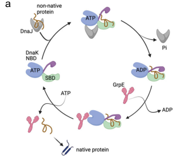

DnaK is the canonical bacterial Hsp70-family ATP-dependent molecular chaperone. It binds exposed hydrophobic segments of non-native polypeptides and, through repeated ATP-driven cycles of substrate binding and release, prevents aggregation and assists the (re)folding of proteins both co-translationally and post-translationally. The protein has the conserved Hsp70 architecture, comprising an N-terminal nucleotide-binding domain (NBD) that binds and hydrolyzes ATP, a substrate-binding domain (SBDbeta) that binds short peptide segments of client proteins, an alpha-helical lid (SBDalpha) that regulates substrate capture and release, and a short intrinsically disordered C-terminal tail. In the ATP-bound state DnaK has low substrate affinity and fast exchange, and ATP hydrolysis switches it to a high-affinity ADP state that stabilizes client binding. DnaK operates as part of the bacterial KJE chaperone system together with the J-domain co-chaperone DnaJ (Hsp40), which stimulates DnaK ATPase activity and delivers substrates, and the nucleotide-exchange factor GrpE, which promotes ADP release and substrate cycling. DnaK functions primarily in the cytoplasm and is a central component of the heat-shock and protein quality-control (proteostasis) network, with its expression induced by heat and other stresses.
| GO Term | Evidence | Action | Reason |
|---|---|---|---|
|
GO:0005524
ATP binding
|
IEA
GO_REF:0000120 |
ACCEPT |
Summary: DnaK is an ATP-dependent Hsp70 chaperone whose N-terminal nucleotide-binding domain binds ATP; ATP binding and hydrolysis drive the chaperone cycle. ATP binding is well established for the Hsp70 family and supported by the conserved actin-like ASKHA nucleotide-binding domain fold of this protein.
Reason: Core molecular function of an Hsp70 chaperone, strongly supported by family membership, conserved nucleotide-binding domain, and the canonical DnaK mechanism. The IEA evidence is appropriate and consistent with the biology.
|
|
GO:0006457
protein folding
|
IEA
GO_REF:0000002 |
ACCEPT |
Summary: DnaK assists folding of non-native polypeptides and prevents aggregation through ATP-driven cycles of substrate binding and release, acting in the cytoplasm as part of the DnaK-DnaJ-GrpE system. This is the central biological process for bacterial Hsp70.
Reason: Core biological process for DnaK, well supported by family function and conserved domain architecture. Appropriately captured by an IEA annotation.
|
|
GO:0016887
ATP hydrolysis activity
|
IEA
GO_REF:0000002 |
ACCEPT |
Summary: The DnaK nucleotide-binding domain catalyzes ATP hydrolysis, which is allosterically coupled to substrate binding in the substrate-binding domain; ATP hydrolysis (stimulated by DnaJ) switches DnaK to the high-affinity client-binding state. This ATPase activity is intrinsic to and definitional for the Hsp70 family.
Reason: Core molecular function of DnaK that powers the chaperone cycle. Strongly supported by family membership and conserved catalytic NBD; the IEA annotation is appropriate.
|
|
GO:0051082
unfolded protein binding
|
IEA
GO_REF:0000002 |
NEW |
Summary: The substrate-binding domain (SBD) of DnaK binds exposed hydrophobic segments of non-native/unfolded client proteins; this chaperone (holdase) binding activity is the basis for preventing aggregation and promoting folding. The UniProt InterPro cross-references include GO:0051082 (unfolded protein binding) for this protein, though it is not present in the current GOA export.
Reason: Core molecular function of DnaK as an Hsp70 chaperone, capturing the direct binding of unfolded/non-native client proteins by the substrate-binding domain. Supported by family membership, the conserved peptide-binding domain, and the InterPro2GO mapping in UniProt; complements the protein folding (BP) annotation.
|
The research report should be a detailed narrative explaining the function, biological processes, and localization of the gene product. Citations should be given for all claims.
You should prioritize authoritative reviews and primary scientific literature when conducting research. You can supplement
this with annotations you find in gene/protein databases, but these can be outdated or inaccurate.
We are specifically interested in the primary function of the gene - for enzymes, what reaction is catalyzed, and what is the substrate specificity? For transporters, what is the substrate? For structural proteins or adapters, what is the broader structural role? For signaling molecules, what is the role in the pathway.
We are interested in where in or outside the cell the gene product carries out its function.
We are also interested in the signaling or biochemical pathways in which the gene functions. We are less interested in broad pleiotropic effects, except where these elucidate the precise role.
Include evidence where possible. We are interested in both experimental evidence as well as inference from structure, evolution, or bioinformatic analysis. Precise studies should be prioritized over high-throughput, where available.
The protein described by UniProt accession Q88DU2 corresponds to DnaK (bacterial Hsp70) in Pseudomonas putida KT2440, and it is explicitly identified as DnaK (Q88DU2) in a KT2440 PHA-granule–associated proteomics study. (tarazona2020phasininteractomereveals pages 9-10)
The gene symbol dnaK is used broadly across bacteria for Hsp70-family chaperones; therefore, organism-anchored evidence is required. The proteomics identification of DnaK (Q88DU2) in P. putida KT2440 provides this anchor, ensuring we are not conflating results from other bacteria. (tarazona2020phasininteractomereveals pages 9-10)
DnaK is the canonical bacterial Hsp70-family ATP-dependent molecular chaperone that supports proteostasis by binding non-native polypeptides and preventing aggregation, assisting folding through repeated ATP-driven binding/release cycles. (rosendahl2021thedisorderedcterminus pages 1-2)
A widely supported, current bacterial DnaK architecture comprises:
- an N-terminal nucleotide-binding domain (NBD) (~45 kDa) that binds/hydrolyzes ATP,
- a substrate-binding β-domain (SBDβ) (~15 kDa) that binds peptide segments,
- an α-helical lid (SBDα) (~10 kDa) that regulates substrate capture/release,
- and commonly a short/disordered C-terminal tail that can modulate substrate/cofactor interactions. (pan2024dnakduplicationand pages 1-2, rosendahl2021thedisorderedcterminus pages 1-2)
The DnaK cycle is controlled by allosteric communication between NBD and SBD:
- In the ATP-bound state, substrate affinity is low and substrate exchange is fast.
- After ATP hydrolysis, substrate affinity increases markedly (reported ~10–50-fold), while association/dissociation kinetics slow (~100–1000-fold decreases in association/dissociation rates), stabilizing client binding.
- Nucleotide exchange (ADP→ATP) promotes substrate release and cycling. (xiao2024structureofthe pages 1-2)
In bacteria, DnaK typically functions with:
- DnaJ (Hsp40/J-domain protein), which accelerates DnaK ATP hydrolysis and promotes productive client engagement,
- GrpE, a nucleotide exchange factor (NEF) that promotes ADP release and thereby coordinates substrate release and continuation of the cycle. (pan2024dnakduplicationand pages 1-2, rosendahl2021thedisorderedcterminus pages 1-2)
A 2024 cryo-EM study resolved an asymmetric 1:2 DnaK–GrpE complex (Mycobacterium tuberculosis system), in which the GrpE dimer “ratchets” to modulate both DnaK NBD and SBD. The study reports that:
- the disordered GrpE N-terminus is critical for substrate release,
- the DnaK–GrpE interface is essential for folding activity in vitro and in vivo,
- and GrpE can allosterically couple ADP release (NBD) with peptide release (SBD). (xiao2024structureofthe pages 1-2, xiao2024structureofthe pages 5-7)
Visual support for this cycle/complex is provided in the same paper’s figures (DnaK cycle and complex depictions). (xiao2024structureofthe media 2a623946, xiao2024structureofthe media b1aedc95)
A 2024 mSystems study reports genome-scale statistics:
- dnaK is present in 98.9% of bacterial genomes,
- 6.4% of bacterial genomes encode ≥2 DnaK paralogs.
The same work links dnaK duplication to increased proteome complexity and shows how DnaK paralogs can specialize toward different client subsets (e.g., cytosolic vs membrane-enriched interactomes in a model organism). (pan2024dnakduplicationand pages 1-2)
A 2024 PLOS Biology study in Salmonella reports a non-canonical role: DnaK can reduce protein synthesis during infection-relevant Mg2+ starvation, with quantitative findings including:
- ~3-fold increase in DnaK ribosome association,
- ~30-fold decrease in trigger factor ribosome association,
- and a dramatic survival phenotype: C-terminal truncation caused ~10,000-fold loss in viability under that stress, which could be bypassed by translation inhibition. (chan2024chaperonehsp70helps pages 1-2, chan2024chaperonehsp70helps pages 12-15)
While not P. putida-specific, this result is a recent authoritative example of expanded DnaK functional repertoire, relevant to annotation discussions about DnaK’s roles beyond folding.
In P. putida, DnaK is described as an ATP-dependent chaperone whose substrate binding is controlled by ATP binding/hydrolysis, acting via repeated cycles of binding/release of unfolded proteins; it operates with co-chaperones DnaJ and GrpE. (rosendahl2021thedisorderedcterminus pages 1-2)
Protein quality control / stress response: DnaK participates in the bacterial heat-shock/proteostasis network, helping refold or remodel damaged proteins; heat stress increases the demand for chaperone activity and can titrate DnaK away from other interactions. (rosendahl2021thedisorderedcterminus pages 1-2)
Toxin–antitoxin/translation-linked phenotypes (GraTA system): In Pseudomonas putida, DnaK interacts with the toxin GraT and can enhance GraT-associated phenotypes; the proposed interpretation is that DnaK may remodel GraT (which has intrinsically disordered elements) to a functionally active state, linking DnaK chaperoning to toxin-mediated growth phenotypes. (rosendahl2021thedisorderedcterminus pages 6-8, rosendahl2021thedisorderedcterminus pages 1-2)
Primary localization expectation: DnaK is fundamentally a cytosolic chaperone consistent with its folding and proteostasis roles. (rosendahl2021thedisorderedcterminus pages 1-2)
Evidence for association with PHA granules/carbonosomes in KT2440: In KT2440, DnaK (Q88DU2) was detected on the surface of isolated PHA granules, alongside other chaperones (e.g., GroL) and folding-related proteins. The authors note this may represent true granule association or contamination during preparation; however, DnaK presence at granules is repeatedly observed in related contexts (e.g., nitrogen-limited/PHA-producing conditions) and is hypothesized to support roles such as enhancing protein folding in the granule milieu. (tarazona2020phasininteractomereveals pages 9-10)
Essentiality: Attempts to delete dnaK in P. putida were unsuccessful, consistent with essential function in this organism/strain background. (rosendahl2021thedisorderedcterminus pages 6-8)
C-terminal motif and fitness: The DnaK C-terminus is intrinsically disordered and contains a conserved negatively charged motif (e.g., including DAEFEE). Mutations in this motif reduce competitive fitness and alter stress-related phenotypes; for example, a motif mutant strain was strongly outcompeted in long-term competition (notably at elevated temperature conditions). (rosendahl2021thedisorderedcterminus pages 10-12, rosendahl2021thedisorderedcterminus pages 14-15)
GraT-related growth effects and quantitative expression change: Induced dnaK overexpression increased dnaK mRNA ~2.7-fold (25°C) and slightly exacerbated GraT-linked growth defects in a GraT-producing background. (rosendahl2021thedisorderedcterminus pages 6-8)
Salt stress interaction evidence (genetic interaction): In a secB-defective background, combining secB deficiency with a DnaK C-terminal motif mutant increased sensitivity to NaCl stress, supporting that DnaK contributes to stress robustness in concert with other chaperone/targeting pathways. (rosendahl2021thedisorderedcterminus pages 10-12)
A 2024 study engineered P. putida KT2440 for improved salt tolerance and pollutant degradation in saline conditions. Key quantitative outcomes include:
- Wild-type KT2440 tolerated a maximum of 4% (w/v) NaCl in minimal salts medium.
- Engineered co-expression increased tolerance to 5% (w/v) NaCl, and adding compatible solutes increased tolerance to 6% (w/v) NaCl.
- Under 4% NaCl, the engineered strain degraded 56.70% benzoic acid and 95.64% protocatechuic acid within 48 h, whereas the normal strain showed no biodegradation under the same conditions. (fan2024improvementinsalt pages 1-2, fan2024improvementinsalt pages 10-12)
While this paper’s engineering targets include osmoprotection and ion transport, it explicitly frames molecular chaperones (including dnaK) as part of stress-response logic for survival under harsh conditions, consistent with DnaK’s proteostasis role in real-world deployment scenarios (high salinity bioremediation). (fan2024improvementinsalt pages 1-2)
A 2024 Microbial Cell Factories study demonstrates P. putida KT2440 can sustain long-duration, non-growth production in an anoxic bio-electrochemical system (anode as terminal electron acceptor). Implementation-relevant quantitative points include:
- Glucose conversion lasting ~380 h and maintenance of metabolic activity for weeks.
- A best-performing mutant accumulated 2-ketogluconate (2KG) at twice the rate of wild type and achieved yield 0.96 mol/mol (i.e., up to ~96% conversion). (weimer2024systemsbiologyof pages 1-2, weimer2024systemsbiologyof pages 14-15)
These studies emphasize global adaptation including shutdown of translation/motility, making recent DnaK-linked insights about translation coordination under stress (even if discovered in other bacteria) particularly relevant for interpreting KT2440’s stress physiology and robustness engineering potential. (chan2024chaperonehsp70helps pages 1-2, weimer2024systemsbiologyof pages 1-2)
A 2024 Journal of Translational Medicine study reports that bacterial DnaKs can reduce effectiveness of p53-dependent chemotherapies (cisplatin, 5-FU), and that a DnaK-binding peptide inhibitor (ARV-1502) can restore drug efficacy in the tested systems, illustrating that bacterial DnaK is actively being explored as a targetable factor in host–microbiome–therapy interactions. ()
The weight of evidence supports ATP-dependent chaperone activity as the primary function, in the canonical KJE system, enabling folding/maintenance of proteome integrity under normal and stress conditions. This is supported by mechanistic descriptions in Pseudomonas DnaK studies and by high-resolution, 2024 structural work clarifying how GrpE couples nucleotide exchange to substrate release (a key step in the foldase cycle). (rosendahl2021thedisorderedcterminus pages 1-2, xiao2024structureofthe pages 1-2)
KT2440-adjacent experimental work highlights that DnaK’s C-terminal disordered region is not merely decorative: it measurably impacts competitive fitness, toxin-linked phenotypes, and stress interactions, indicating that strain-level robustness traits can hinge on this region. (rosendahl2021thedisorderedcterminus pages 14-15, rosendahl2021thedisorderedcterminus pages 10-12)
Detection of DnaK (Q88DU2) on isolated PHA granules suggests either:
- a functional association where local chaperoning supports granule proteome integrity under nutrient imbalance, or
- experimental carryover from other compartments.
Because the authors explicitly acknowledge both possibilities, the conservative annotation is: cytosolic DnaK with reported condition-dependent enrichment/association in PHA granule preparations under nitrogen limitation. (tarazona2020phasininteractomereveals pages 9-10, kelly2024comprehensiveproteomicsanalysis pages 1-3)
A 2024 Nature Communications paper provides visual depictions of (i) the DnaK–DnaJ–GrpE chaperone cycle and (ii) the DnaK–GrpE complex structure. These figures support mechanistic statements about allosteric cycling and GrpE-mediated coupling of nucleotide/substrate release. (xiao2024structureofthe media 2a623946, xiao2024structureofthe media b1aedc95)
| Annotation aspect | Functional annotation summary | Supporting citations |
|---|---|---|
| Identity | UniProt Q88DU2 is DnaK, the canonical bacterial Hsp70 chaperone, in Pseudomonas putida KT2440; it was directly identified as DnaK (Q88DU2) in a KT2440 proteomics study. | (tarazona2020phasininteractomereveals pages 9-10) |
| Domains/architecture | DnaK/Hsp70 has the expected bacterial architecture: N-terminal ~45 kDa nucleotide-binding domain (NBD), substrate-binding β-domain (SBDβ), α-helical lid (SBDα), and a short intrinsically disordered C-terminal tail; ATP binding occurs at the NBD and peptide substrates bind the SBD. | (pan2024dnakduplicationand pages 1-2, rosendahl2021thedisorderedcterminus pages 1-2) |
| Mechanism | DnaK is an ATP-dependent molecular chaperone that binds and releases non-native polypeptides through allosterically coupled ATP hydrolysis cycles; ATP-state DnaK has low substrate affinity, whereas after ATP hydrolysis substrate affinity rises ~10–50-fold and association/dissociation rates drop ~100–1000-fold. | (xiao2024structureofthe pages 1-2, rosendahl2021thedisorderedcterminus pages 1-2) |
| Co-chaperones | The core bacterial KJE system comprises DnaK with the J-domain cochaperone DnaJ and nucleotide-exchange factor GrpE; DnaJ stimulates Hsp70 ATPase activity by >1,000-fold, and GrpE promotes ADP release and substrate release. | (chan2024chaperonehsp70helps pages 1-2, pan2024dnakduplicationand pages 1-2, rosendahl2021thedisorderedcterminus pages 1-2) |
| Localization | The primary functional localization is cytosolic, consistent with proteostasis and folding roles; in KT2440, DnaK (Q88DU2) was also detected on the surface of isolated PHA granules/carbonosomes under nitrogen-limiting PHA-producing conditions, though authors note this may reflect true association or preparation carryover. | (tarazona2020phasininteractomereveals pages 9-10, kelly2024comprehensiveproteomicsanalysis pages 1-3) |
| Pathways/biological processes | DnaK participates in the bacterial heat-shock/protein quality-control network, assists co- and post-translational folding, helps prevent aggregation/remodel damaged proteins, and is connected to nutrient-stress responses such as nitrogen limitation/PHA accumulation and osmotic stress adaptation. | (craig2021leveragingpseudomonasstress pages 5-6, rosendahl2021thedisorderedcterminus pages 1-2, tarazona2020phasininteractomereveals pages 9-10, kelly2024comprehensiveproteomicsanalysis pages 1-3) |
| Phenotypes in P. putida | In P. putida, DnaK appears essential because deletion attempts failed; its disordered C-terminus and especially a negatively charged terminal motif contribute to competitive fitness and facilitate toxicity of the GraT toxin. Overexpression increased dnaK mRNA ~2.7-fold, and C-terminal motif mutants were outcompeted in long-term competition, especially at 34 °C. | (rosendahl2021thedisorderedcterminus pages 6-8, rosendahl2021thedisorderedcterminus pages 10-12, rosendahl2021thedisorderedcterminus pages 1-2) |
| Recent 2024 structural/regulatory insights | Recent 2024 work sharpened DnaK annotation beyond classical folding: bacterial DnaK is present in 98.9% of bacterial genomes, and 6.4% encode ≥2 paralogs; cryo-EM of DnaK–GrpE showed an asymmetric 1:2 complex where GrpE ratchets to couple ADP release and substrate release; a 2024 stress study showed DnaK can also reduce translation independently of J-domain cochaperones under specific stress. | (pan2024dnakduplicationand pages 1-2, xiao2024structureofthe pages 1-2, chan2024chaperonehsp70helps pages 1-2, chan2024chaperonehsp70helps pages 12-15) |
| Applications/implementations | DnaK-related knowledge is being leveraged for biotechnology and stress engineering: KT2440 salt-tolerance engineering identified dnaK/dnaJ/clpB/htpG among stress-responsive chaperones; engineered KT2440 strains tolerated up to 5% NaCl, and up to 6% with compatible solutes, enabling aromatic degradation under 4% NaCl. In broader bacterial engineering, chaperone systems are used to improve robustness under industrial stresses. | (fan2024improvementinsalt pages 1-2, fan2024improvementinsalt pages 10-12, craig2021leveragingpseudomonasstress pages 5-6) |
| Key quantitative data | Representative quantitative findings relevant to annotation: 98.9% of bacterial genomes encode dnaK and 6.4% have multiple paralogs; ATP hydrolysis shifts DnaK substrate affinity by ~10–50-fold; under Mg2+ starvation DnaK-ribosome association increased ~3-fold while Trigger Factor association fell ~30-fold; C-terminal DnaK truncation caused ~10,000-fold viability loss in that stress model; KT2440 salt-tolerance engineering enabled 56.70% benzoic acid and 95.64% protocatechuic acid degradation at 4% NaCl in 48 h. | (pan2024dnakduplicationand pages 1-2, xiao2024structureofthe pages 1-2, chan2024chaperonehsp70helps pages 1-2, chan2024chaperonehsp70helps pages 12-15, fan2024improvementinsalt pages 1-2, fan2024improvementinsalt pages 10-12) |
Table: This table summarizes the most relevant identity, mechanistic, localization, pathway, phenotype, and application evidence for Pseudomonas putida KT2440 DnaK (UniProt Q88DU2). It is designed as a compact annotation aid with direct citation IDs for each major claim.
References
(tarazona2020phasininteractomereveals pages 9-10): Natalia A. Tarazona, Ana M. Hernández‐Arriaga, Ryan Kniewel, and M. Auxiliadora Prieto. Phasin interactome reveals the interplay of
(rosendahl2021thedisorderedcterminus pages 1-2): Sirli Rosendahl, Andres Ainelo, and Rita Hõrak. The disordered c-terminus of the chaperone dnak increases the competitive fitness of pseudomonas putida and facilitates the toxicity of grat. Microorganisms, 9:375, Feb 2021. URL: https://doi.org/10.3390/microorganisms9020375, doi:10.3390/microorganisms9020375. This article has 8 citations.
(pan2024dnakduplicationand pages 1-2): Zhuo Pan, Li Zhuo, Tian-yu Wan, Rui-yun Chen, and Yue-zhong Li. Dnak duplication and specialization in bacteria correlates with increased proteome complexity. Apr 2024. URL: https://doi.org/10.1128/msystems.01154-23, doi:10.1128/msystems.01154-23. This article has 10 citations and is from a peer-reviewed journal.
(xiao2024structureofthe pages 1-2): Xiansha Xiao, Allison Fay, Pablo Santos Molina, Amanda Kovach, Michael S. Glickman, and Huilin Li. Structure of the m. tuberculosis dnak−grpe complex reveals how key dnak roles are controlled. Nature Communications, Jan 2024. URL: https://doi.org/10.1038/s41467-024-44933-9, doi:10.1038/s41467-024-44933-9. This article has 31 citations and is from a highest quality peer-reviewed journal.
(xiao2024structureofthe pages 5-7): Xiansha Xiao, Allison Fay, Pablo Santos Molina, Amanda Kovach, Michael S. Glickman, and Huilin Li. Structure of the m. tuberculosis dnak−grpe complex reveals how key dnak roles are controlled. Nature Communications, Jan 2024. URL: https://doi.org/10.1038/s41467-024-44933-9, doi:10.1038/s41467-024-44933-9. This article has 31 citations and is from a highest quality peer-reviewed journal.
(xiao2024structureofthe media 2a623946): Xiansha Xiao, Allison Fay, Pablo Santos Molina, Amanda Kovach, Michael S. Glickman, and Huilin Li. Structure of the m. tuberculosis dnak−grpe complex reveals how key dnak roles are controlled. Nature Communications, Jan 2024. URL: https://doi.org/10.1038/s41467-024-44933-9, doi:10.1038/s41467-024-44933-9. This article has 31 citations and is from a highest quality peer-reviewed journal.
(xiao2024structureofthe media b1aedc95): Xiansha Xiao, Allison Fay, Pablo Santos Molina, Amanda Kovach, Michael S. Glickman, and Huilin Li. Structure of the m. tuberculosis dnak−grpe complex reveals how key dnak roles are controlled. Nature Communications, Jan 2024. URL: https://doi.org/10.1038/s41467-024-44933-9, doi:10.1038/s41467-024-44933-9. This article has 31 citations and is from a highest quality peer-reviewed journal.
(chan2024chaperonehsp70helps pages 1-2): Carissa Chan and Eduardo A. Groisman. Chaperone hsp70 helps salmonella survive infection-relevant stress by reducing protein synthesis. PLOS Biology, 22:e3002560, Apr 2024. URL: https://doi.org/10.1371/journal.pbio.3002560, doi:10.1371/journal.pbio.3002560. This article has 13 citations and is from a highest quality peer-reviewed journal.
(chan2024chaperonehsp70helps pages 12-15): Carissa Chan and Eduardo A. Groisman. Chaperone hsp70 helps salmonella survive infection-relevant stress by reducing protein synthesis. PLOS Biology, 22:e3002560, Apr 2024. URL: https://doi.org/10.1371/journal.pbio.3002560, doi:10.1371/journal.pbio.3002560. This article has 13 citations and is from a highest quality peer-reviewed journal.
(rosendahl2021thedisorderedcterminus pages 6-8): Sirli Rosendahl, Andres Ainelo, and Rita Hõrak. The disordered c-terminus of the chaperone dnak increases the competitive fitness of pseudomonas putida and facilitates the toxicity of grat. Microorganisms, 9:375, Feb 2021. URL: https://doi.org/10.3390/microorganisms9020375, doi:10.3390/microorganisms9020375. This article has 8 citations.
(rosendahl2021thedisorderedcterminus pages 10-12): Sirli Rosendahl, Andres Ainelo, and Rita Hõrak. The disordered c-terminus of the chaperone dnak increases the competitive fitness of pseudomonas putida and facilitates the toxicity of grat. Microorganisms, 9:375, Feb 2021. URL: https://doi.org/10.3390/microorganisms9020375, doi:10.3390/microorganisms9020375. This article has 8 citations.
(rosendahl2021thedisorderedcterminus pages 14-15): Sirli Rosendahl, Andres Ainelo, and Rita Hõrak. The disordered c-terminus of the chaperone dnak increases the competitive fitness of pseudomonas putida and facilitates the toxicity of grat. Microorganisms, 9:375, Feb 2021. URL: https://doi.org/10.3390/microorganisms9020375, doi:10.3390/microorganisms9020375. This article has 8 citations.
(fan2024improvementinsalt pages 1-2): Min Fan, Shuyu Tan, Wei Wang, and Xuehong Zhang. Improvement in salt tolerance ability of pseudomonas putida kt2440. Biology, 13:404, Jun 2024. URL: https://doi.org/10.3390/biology13060404, doi:10.3390/biology13060404. This article has 25 citations.
(fan2024improvementinsalt pages 10-12): Min Fan, Shuyu Tan, Wei Wang, and Xuehong Zhang. Improvement in salt tolerance ability of pseudomonas putida kt2440. Biology, 13:404, Jun 2024. URL: https://doi.org/10.3390/biology13060404, doi:10.3390/biology13060404. This article has 25 citations.
(weimer2024systemsbiologyof pages 1-2): Anna Weimer, Laura Pause, Fabian Ries, Michael Kohlstedt, Lorenz Adrian, Jens Krömer, Bin Lai, and Christoph Wittmann. Systems biology of electrogenic pseudomonas putida - multi-omics insights and metabolic engineering for enhanced 2-ketogluconate production. Microbial Cell Factories, Sep 2024. URL: https://doi.org/10.1186/s12934-024-02509-8, doi:10.1186/s12934-024-02509-8. This article has 7 citations and is from a peer-reviewed journal.
(weimer2024systemsbiologyof pages 14-15): Anna Weimer, Laura Pause, Fabian Ries, Michael Kohlstedt, Lorenz Adrian, Jens Krömer, Bin Lai, and Christoph Wittmann. Systems biology of electrogenic pseudomonas putida - multi-omics insights and metabolic engineering for enhanced 2-ketogluconate production. Microbial Cell Factories, Sep 2024. URL: https://doi.org/10.1186/s12934-024-02509-8, doi:10.1186/s12934-024-02509-8. This article has 7 citations and is from a peer-reviewed journal.
(kelly2024comprehensiveproteomicsanalysis pages 1-3): Siobhán Kelly, Jia-Lynn Tham, Kate McKeever, Eugène Dillon, David J. O’Connell, Dimitri Scholz, Jeremy C. Simpson, Kevin E O'Connor, T. Narančić, and Gerard Cagney. Comprehensive proteomics analysis of polyhydroxyalkanoate (pha) biology in pseudomonas putida kt2440: the outer membrane lipoprotein oprl is a newly identified phasin. Molecular & Cellular Proteomics, 23:100765, May 2024. URL: https://doi.org/10.1016/j.mcpro.2024.100765, doi:10.1016/j.mcpro.2024.100765. This article has 11 citations and is from a domain leading peer-reviewed journal.
(craig2021leveragingpseudomonasstress pages 5-6): Kelly Craig, Brant R. Johnson, and Amy Grunden. Leveraging pseudomonas stress response mechanisms for industrial applications. Frontiers in Microbiology, May 2021. URL: https://doi.org/10.3389/fmicb.2021.660134, doi:10.3389/fmicb.2021.660134. This article has 67 citations and is from a peer-reviewed journal.

id: Q88DU2
gene_symbol: dnaK
product_type: PROTEIN
status: DRAFT
taxon:
id: NCBITaxon:160488
label: Pseudomonas putida (strain ATCC 47054 / DSM 6125 / CFBP 8728 / NCIMB 11950 / KT2440)
description: >-
DnaK is the canonical bacterial Hsp70-family ATP-dependent molecular chaperone.
It binds exposed hydrophobic segments of non-native polypeptides and, through repeated
ATP-driven cycles of substrate binding and release, prevents aggregation and assists
the (re)folding of proteins both co-translationally and post-translationally. The
protein has the conserved Hsp70 architecture, comprising an N-terminal nucleotide-binding
domain (NBD) that binds and hydrolyzes ATP, a substrate-binding domain (SBDbeta)
that binds short peptide segments of client proteins, an alpha-helical lid (SBDalpha)
that regulates substrate capture and release, and a short intrinsically disordered
C-terminal tail. In the ATP-bound state DnaK has low substrate affinity and fast
exchange, and ATP hydrolysis switches it to a high-affinity ADP state that stabilizes
client binding. DnaK operates as part of the bacterial KJE chaperone system together
with the J-domain co-chaperone DnaJ (Hsp40), which stimulates DnaK ATPase activity
and delivers substrates, and the nucleotide-exchange factor GrpE, which promotes
ADP release and substrate cycling. DnaK functions primarily in the cytoplasm and
is a central component of the heat-shock and protein quality-control (proteostasis)
network, with its expression induced by heat and other stresses.
existing_annotations:
- term:
id: GO:0005524
label: ATP binding
evidence_type: IEA
original_reference_id: GO_REF:0000120
qualifier: enables
review:
summary: >-
DnaK is an ATP-dependent Hsp70 chaperone whose N-terminal nucleotide-binding
domain binds ATP; ATP binding and hydrolysis drive the chaperone cycle. ATP binding
is well established for the Hsp70 family and supported by the conserved actin-like
ASKHA nucleotide-binding domain fold of this protein.
action: ACCEPT
reason: >-
Core molecular function of an Hsp70 chaperone, strongly supported by family membership,
conserved nucleotide-binding domain, and the canonical DnaK mechanism. The IEA
evidence is appropriate and consistent with the biology.
- term:
id: GO:0006457
label: protein folding
evidence_type: IEA
original_reference_id: GO_REF:0000002
qualifier: involved_in
review:
summary: >-
DnaK assists folding of non-native polypeptides and prevents aggregation through
ATP-driven cycles of substrate binding and release, acting in the cytoplasm as
part of the DnaK-DnaJ-GrpE system. This is the central biological process for
bacterial Hsp70.
action: ACCEPT
reason: >-
Core biological process for DnaK, well supported by family function and conserved
domain architecture. Appropriately captured by an IEA annotation.
- term:
id: GO:0016887
label: ATP hydrolysis activity
evidence_type: IEA
original_reference_id: GO_REF:0000002
qualifier: enables
review:
summary: >-
The DnaK nucleotide-binding domain catalyzes ATP hydrolysis, which is allosterically
coupled to substrate binding in the substrate-binding domain; ATP hydrolysis
(stimulated by DnaJ) switches DnaK to the high-affinity client-binding state.
This ATPase activity is intrinsic to and definitional for the Hsp70 family.
action: ACCEPT
reason: >-
Core molecular function of DnaK that powers the chaperone cycle. Strongly supported
by family membership and conserved catalytic NBD; the IEA annotation is appropriate.
- term:
id: GO:0051082
label: unfolded protein binding
evidence_type: IEA
original_reference_id: GO_REF:0000002
qualifier: enables
review:
summary: >-
The substrate-binding domain (SBD) of DnaK binds exposed hydrophobic segments
of non-native/unfolded client proteins; this chaperone (holdase) binding activity
is the basis for preventing aggregation and promoting folding. The UniProt InterPro
cross-references include GO:0051082 (unfolded protein binding) for this protein,
though it is not present in the current GOA export.
action: NEW
reason: >-
Core molecular function of DnaK as an Hsp70 chaperone, capturing the direct binding
of unfolded/non-native client proteins by the substrate-binding domain. Supported
by family membership, the conserved peptide-binding domain, and the InterPro2GO
mapping in UniProt; complements the protein folding (BP) annotation.
core_functions:
- description: >-
ATP-dependent Hsp70 molecular chaperone that binds non-native polypeptides and,
through ATP-binding and ATP-hydrolysis-driven cycles of substrate capture and release,
prevents aggregation and assists protein folding as part of the DnaK-DnaJ-GrpE
(KJE) system in the cytoplasm.
molecular_function:
id: GO:0051082
label: unfolded protein binding
directly_involved_in:
- id: GO:0006457
label: protein folding
supported_by:
- reference_id: file:PSEPK/dnaK/dnaK-deep-research-falcon.md
supporting_text: >-
DnaK is the canonical bacterial Hsp70-family ATP-dependent molecular chaperone
that supports proteostasis by binding non-native polypeptides and preventing
aggregation, assisting folding through repeated ATP-driven binding/release cycles,
operating with co-chaperones DnaJ and GrpE.
- description: >-
ATPase activity of the nucleotide-binding domain, allosterically coupled to substrate
binding, that powers the chaperone cycle.
molecular_function:
id: GO:0016887
label: ATP hydrolysis activity
supported_by:
- reference_id: file:PSEPK/dnaK/dnaK-deep-research-falcon.md
supporting_text: >-
ATP-state DnaK has low substrate affinity, whereas after ATP hydrolysis substrate
affinity rises and association/dissociation rates drop, stabilizing client binding;
DnaJ stimulates the ATPase activity and GrpE promotes ADP release.
references:
- id: GO_REF:0000002
title: Gene Ontology annotation through association of InterPro records with GO terms
findings: []
- id: GO_REF:0000120
title: Combined Automated Annotation using Multiple IEA Methods
findings: []
- id: PMID:12534463
title: Complete genome sequence and comparative analysis of the metabolically versatile Pseudomonas putida KT2440
findings: []
reference_review:
relevance: LOW
correctness: VERIFIED
review_notes: >-
Genome sequencing report for P. putida KT2440 (source of the dnaK/PP_4727 locus);
background and genomic context only, does not directly characterize DnaK function.
- id: file:PSEPK/dnaK/dnaK-deep-research-falcon.md
title: Falcon deep research report for dnaK in Pseudomonas putida KT2440
findings: []
{kind=link}